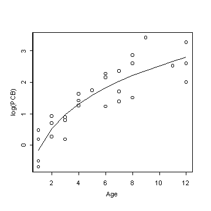

| / Home |
Keywords: linear regression, nonlinear regression
Date on the concentration of polychlorinated biphenyl (PCB) residues in a series of lake trout from Cayuga Lake, NY, were reported in Bache et al (1972). The ages of the fish were accurately known, because the fish were annually stocked as yearlings and distinctly marked as to year class. Each whole fish was mechanically chopped, ground, and thoroughly mixed, and 5-gram samples taken. The samples were treated and PCB residues in parts per million (ppm) were estimated using column chromatography.
Bates and Watts (1988) use a linear model
log(PCB) = b1 + b2 Age1/3
but they remark that the nonlinear model
log(PCB) = b1 + b2 Ageq
is slightly better.
| Variable | Description | ||
| Age | Age of trout (years) | ||
| PCB | PCB concentration (ppm) | ||
Data File (tab-delimited text)
| Bache, C. A., Serum, J. W., Youngs, W. D., and Lisk, D. J. (1972). Polychlorinated biphenyl residues: Accumulation in Cayuga Lake trout with age. Science 117, 1192-1193. |
Bates, D. M., and Watts, D. G. (1988). Nonlinear Regression Analysis and Its Applications. Wiley, New York. |
| Smyth, G. K. (2002). Nonlinear Regression. In: Encyclopedia of Environmetrics, A. H. El-Shaarawi and W. W. Piegorsch (eds.), Wiley, Chichester, Volume 3, pages 1404-1411. (PDF) |
> troutpcb <- read.table("troutpcb.txt",header=T)
> attach(troutpcb)
> out <- nls(log(PCB)~cbind(1,Age^theta),start=list(theta=1),algorithm="plinear")
> summary(out)
Formula: log(PCB) ~ cbind(1, Age^theta)
Parameters:
Value Std. Error t value
theta 0.196867 0.273931 0.718673
-4.864660 8.424260 -0.577458
4.701570 8.272060 0.568367
Residual standard error: 0.503198 on 25 degrees of freedom
Correlation of Parameter Estimates:
theta
0.997
-0.998 -1.000
> plot(Age,log(PCB))
> lines(Age,fitted(out))

|
Home - About Us -
Contact Us Copyright © Gordon Smyth |